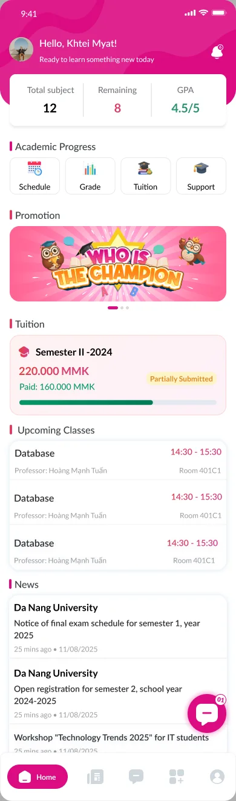
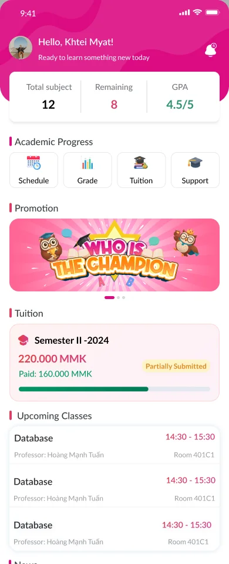
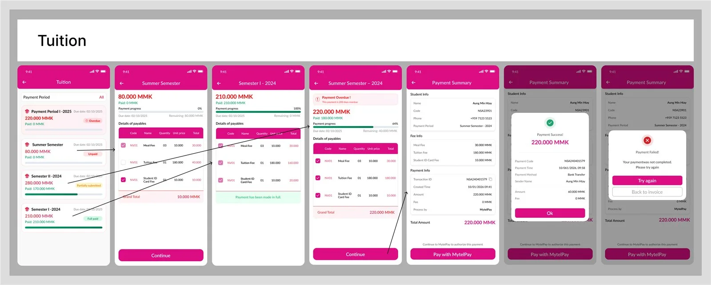
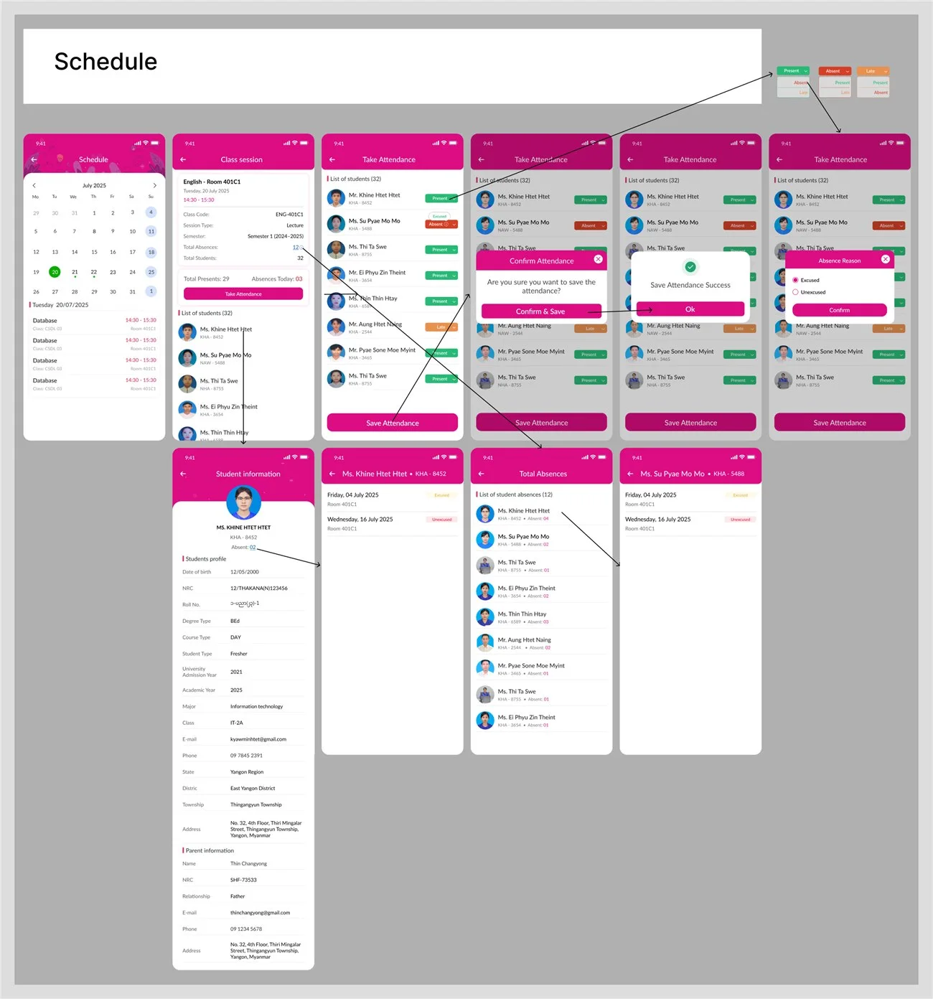
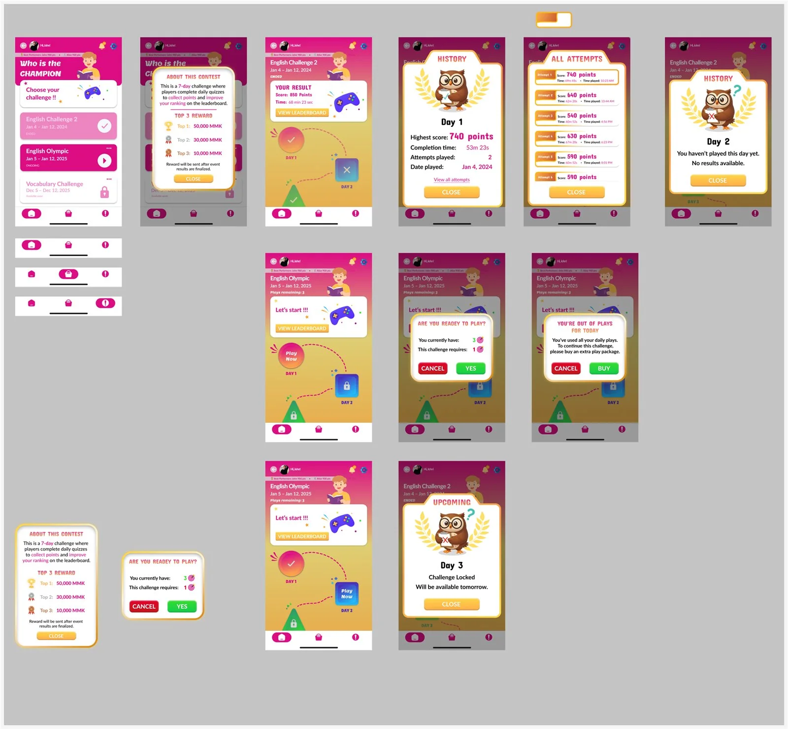
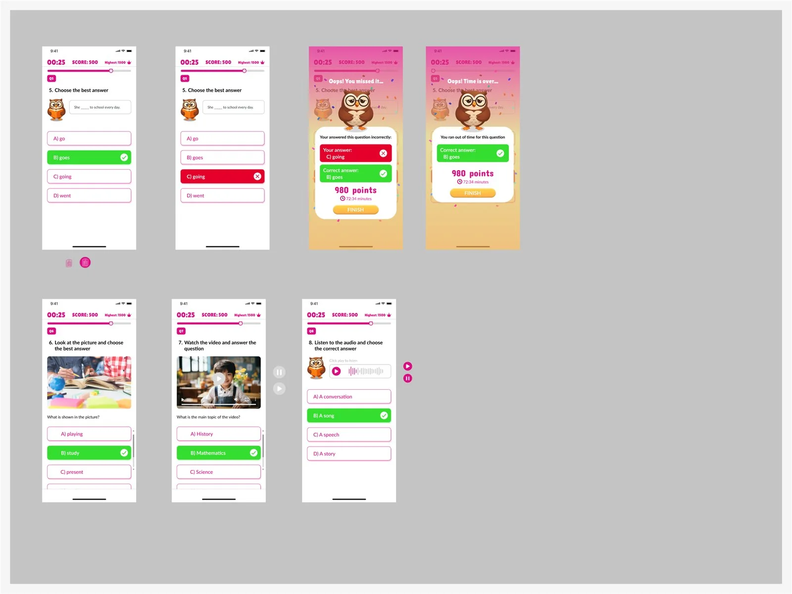
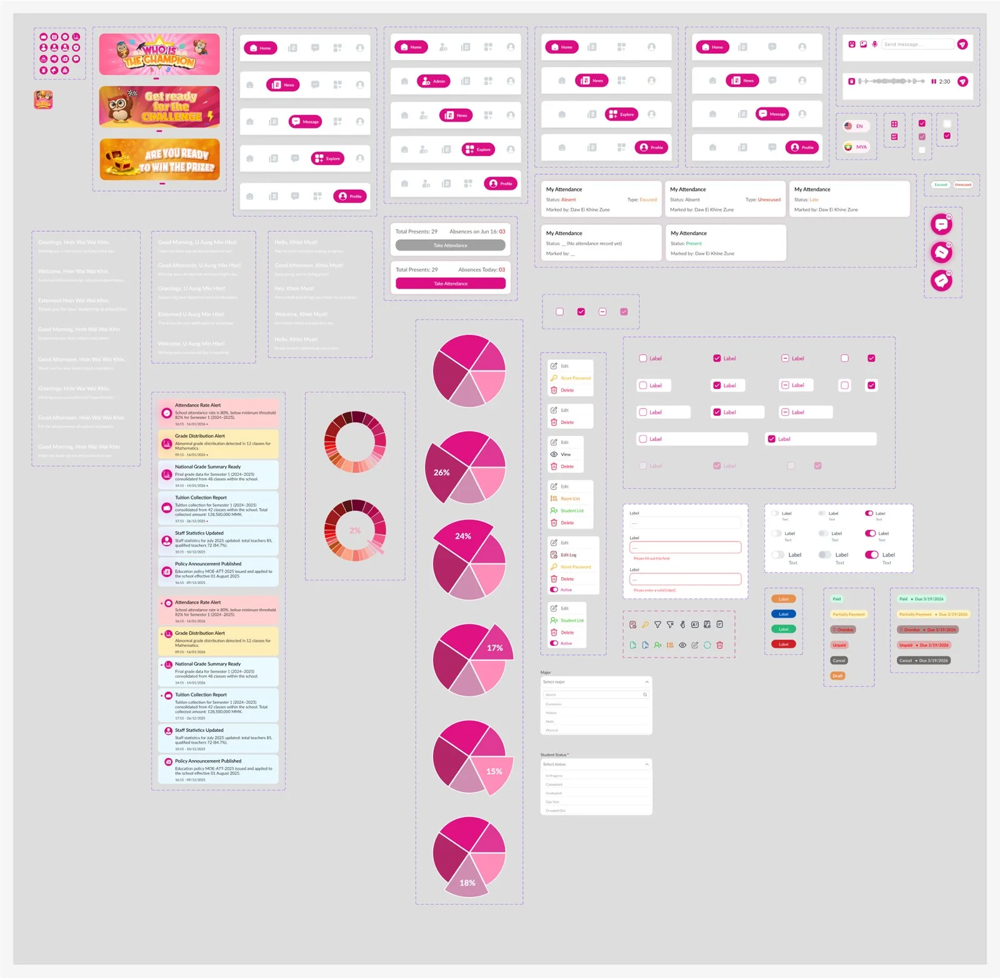
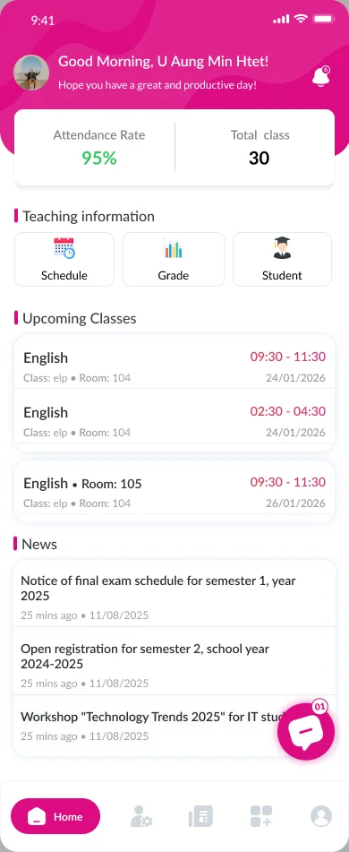
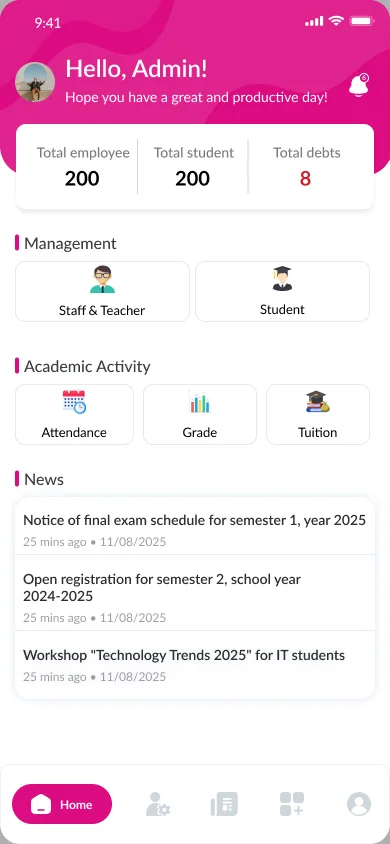
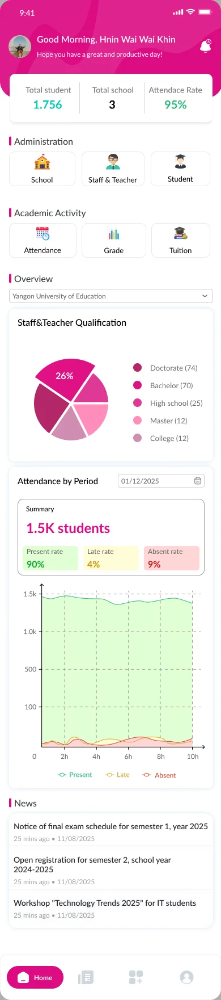

Edu360
School records, tuition and messages for the Ministry of Education of Myanmar and its schools, in one app.Hồ sơ, học phí và tin nhắn cho Bộ Giáo dục Myanmar cùng các trường, trong một app.

- RoleVai trò
- UX/UI designerUX/UI designer
- ForDành cho
- Ministry of Education, Myanmar, and its universities and collegesBộ Giáo dục Myanmar cùng các trường đại học, cao đẳng
- PlatformNền tảng
- Mobile app and a 20-module web back office, in English and MyanmarApp di động và web quản trị 20 phân hệ, tiếng Anh và Myanmar
- DomainLĩnh vực
- EducationGiáo dục
- Key featuresTính năng chính
- A home screen for each of 4 rolesMàn hình chính riêng cho 4 vai trò
- Tuition paymentĐóng học phí
- AttendanceĐiểm danh
- Change approvalsDuyệt thay đổi hồ sơ
- Learning gamesTrò chơi học tập
The problemBài toán
Students, teachers, schools and the Ministry each work from a different list. Grades in one place, tuition in another, notices in a third.Sinh viên, giảng viên, nhà trường và Bộ mỗi bên làm việc trên một danh sách riêng. Điểm một nơi, học phí một nơi, thông báo một nơi.
- MinistryBộMonitors schools, issues policies and sends notices.Theo dõi các trường, ban hành chính sách, gửi thông báo.
- School adminQuản trị trườngRuns training, grades, calendar, tuition and records.Quản lý đào tạo, điểm, lịch, học phí và hồ sơ.
- TeacherGiảng viênTakes attendance, enters grades, shares material.Điểm danh, nhập điểm, chia sẻ tài liệu.
- StudentSinh viênLooks up grades and timetable, pays tuition.Xem điểm, thời khóa biểu, đóng học phí.
Design decisions: student homeQuyết định thiết kế: trang chủ sinh viên

1Each role gets its own first screenMỗi vai trò một màn đầu
Subjects, remaining and GPA for a student. Attendance rate for a teacher. Staff, students and debts for an admin. Same system, different first question.Sinh viên thấy số môn, số còn lại và GPA. Giảng viên thấy tỉ lệ chuyên cần. Quản trị thấy nhân sự, sinh viên và nợ học phí. Cùng hệ thống, khác câu hỏi đầu tiên.
2Four doors, not a menuBốn cửa, không phải menu
Schedule, grade, tuition, support. The rest lives behind Explore, so the home never becomes a list of everything.Lịch, điểm, học phí, hỗ trợ. Phần còn lại nằm trong Khám phá, để trang chủ không thành danh sách mọi thứ.
3A game on top of schoolMột trò chơi trên nền trường học
“Who is the Champion?” is a seven-day challenge with locked days and a daily limit, there to bring students back.“Who is the Champion?” là thử thách bảy ngày, có ngày khóa và giới hạn lượt mỗi ngày, để sinh viên quay lại.
4Debt is a progress barNợ học phí là một thanh tiến độ
Total, paid and a status in words. Paying hands off to MytelPay, which returns a clear success or failure, so money logic stays in one system.Tổng, đã đóng và trạng thái bằng chữ. Thanh toán chuyển sang MytelPay rồi trả về thành công hay thất bại, nên logic tiền chỉ ở một nơi.
5The next class needs no tapTiết học kế tiếp không cần chạm
Time, room and teacher sit on the home screen. The full calendar is one shortcut away.Giờ, phòng và giảng viên nằm ngay trang chủ. Lịch đầy đủ cách một lối tắt.
User flowsLuồng người dùng
Paying tuitionĐóng học phí
Student, from home to a result.Sinh viên, từ trang chủ tới kết quả.
Taking attendanceĐiểm danh
Teacher, from the calendar to a saved list.Giảng viên, từ lịch tới danh sách đã lưu.
Approving a changeDuyệt thay đổi
Admin, where a second person is required.Quản trị, nơi cần người thứ hai.
Detailed design boardsBảng thiết kế chi tiết






Key screensCác màn hình chính



Designed statesCác trạng thái đã thiết kế
- UnpaidChưa đóng
- Partially submittedĐóng một phần
- Full paidĐã đóng đủ
- OverdueQuá hạn
- PresentCó mặt
- AbsentVắng
- LateMuộn
- PendingChờ duyệt
- RejectedTừ chối
- No newsChưa có tin
- Grades did not loadKhông tải được điểm
- Wrong loginSai đăng nhập
DeliveredKết quả bàn giao
- Four role-based experiences on one design systemBốn trải nghiệm theo vai trò trên một design system
- Flow boards for every role, including tuition and attendanceBảng luồng cho mọi vai trò, gồm học phí và điểm danh
- A game layer with its own states, rules and rewardsLớp trò chơi có trạng thái, luật và phần thưởng riêng
Next stepsBước tiếp theo
- Interview students, teachers and adminsPhỏng vấn sinh viên, giảng viên và quản trị
- Design the parent role, chat and assistant, which are in scope without flowsThiết kế vai trò phụ huynh, chat và trợ lý, hiện có trong phạm vi nhưng chưa có luồng
- Specify accessibility and offline useLàm rõ khả năng tiếp cận và dùng khi mất mạng